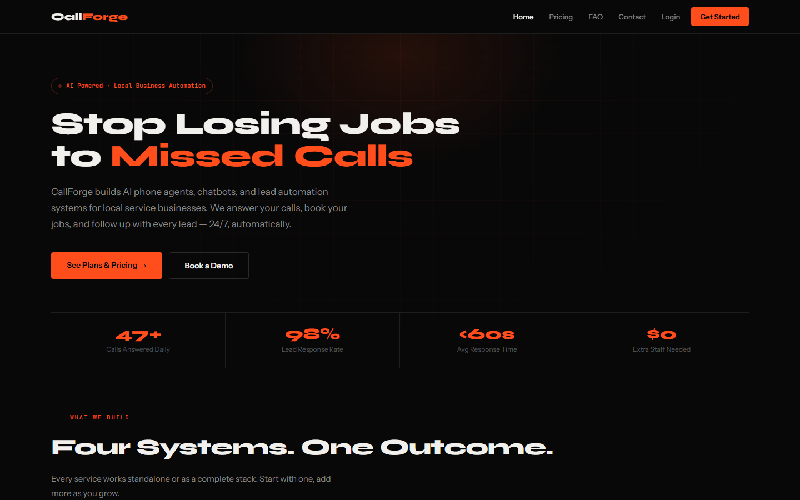

01 / Problem
The product challenge
AI automation can feel abstract and risky to a buyer who mainly wants fewer missed jobs and a reliable process for handling leads.
SaaS / Conversion / Service design
A SaaS marketing experience that explains AI phone, chat, lead-response, and CRM automation services for local businesses.

The experience at a glance
The page translates AI automation into outcomes a local-business owner recognizes: answered calls, booked work, quick lead response, and less manual administration.
Visit the live site ↗This case study describes the live experience and the design decisions visible in the current product. It does not claim formal usability research or measured business outcomes.
01 / Problem
AI automation can feel abstract and risky to a buyer who mainly wants fewer missed jobs and a reliable process for handling leads.
02 / Design intent
Lead with the cost of missed calls, present four understandable service modules, and show a short implementation process before asking for a demo.
03 / Key decisions
04 / Interaction & usability
The information sequence moves from problem to solution, proof, process, and action. Repeated demo links keep conversion available without interrupting the explanation.
05 / Tools & skills
SaaS marketing UX, content hierarchy, service packaging, conversion design, responsive layout, client-login affordances, and production implementation.
06 / What I’d improve next
The public funnel can connect to onboarding, configuration, reporting, and account-management screens to create one continuous customer journey.
Open the live product ↗Next project / Let’s work together